What Is ThingsPro Edge?
ThingsPro Edge is an IIoT edge gateway software that runs on Moxa IIoT Gateways (Moxa's industrial-grade edge computers) enabling you to close the gap between sensors and cloud applications. The containerized software architecture of ThingsPro Edge brings an extensible runtime experience with secure and reliable life-cycle management to functional modules.
ThingsPro Edge offers an easy-to-use user interface to: acquire data from sensors and other field devices, manipulate or filter data locally before sending it out to your applications, and secure data transmission during uploads to popular cloud platforms or your application/database. With the built-in RESTful API, integrating these capabilities into your system is more straightforward than ever.
System Architecture
ThingsPro Edge can fit into your sensor-to-cloud IIoT solution and help simplify application design and development.

What can ThingsPro Edge offer?
ThingsPro Edge is designed to enable global IIoT businesses by offering them an integrated solution. The most challenging step in digital transformation of a business is connecting to the IT field without breaking the existing OT network. In association with system integrators (SIs) and independent software vendors (ISVs), Moxa can help enterprises conquer these complexities by offering a simplified, secure, and reliable OT data transportation solution. The following illustration shows how ThingsPro Edge works on top of the Moxa Edge computing platform to play an essential role in secure and robust Data Ingestion, Processing, and Transmission.

- Intuitive Web GUI
ThingsPro Edge is configured and managed using standard web technologies. You no longer need to use a command line interface to configure Modbus settings for device connections and Azure connection strings and certificates. You can use the intuitive web GUI to connect IIoT gateways and configure the network and system settings, create device tags, and monitor the runtime status, all from a computer on the network.
- Integration With the Azure IoT Hub
In addition to managing Moxa's IIoT Gateways from ThingsPro Edge's Web GUI, you can now configure, monitor, and control these Gateways from the Azure portal. ThingsPro Edge Device Service integrates device twins, direct methods, and device-to-cloud messages into ThingsPro Edge to realize seamless remote monitoring and control from the cloud.
- Streamlined Sensor-to-cloud Data Transportation
With ThingsPro Edge, transporting your data from the assets at the edge to your business has never been easier! If you are building a cloud application, Modbus and other OT-protocol applications help you acquire data from your edge devices. You can then use Azure or other cloud connectivity applications to publish the taged data to the cloud where you can build you applications.
- Custom Payload
ThingsPro Edge makes it easy to publish acquired data to your applications and systems. You no longer require to develop programs to manipulate the message format to suit your applications or systems. ThingsPro Edge helps you manipulate data without requiring any programming skills.
- Rapid Application Development
ThingsPro Edge is designed for rapid development so that you can quickly create software applications for autonomous data processing and event-triggered actions or alarms.
- Secure Design
ThingsPro Edge helps you maintain the integrity of data during transmission and processing. The SecureBoot function and a built-in Trusted Platform Module (TPM) offer strong data protection for your device.
- Robust OTA Upgrade
Keeping the software and firmware on your device up-to-date can effectively help prevent cyberattacks. However, updating devices located in remote unmanned sites is a big challenge for most administrators. ThingsPro Edge's robust over-the-air (OTA) updates cover both software application and device firmware upgrades. The resume capability ensures that you can get the upgrade pack even with intermittent cellular connectivity and the roll-back mechanism will enable your system to recover from a failed installation.
In a nutshell, the dual-track architecture represents the core values of ThingsPro Edge.
- The Data Vehicle component offers the capabilities to transport the OT data as per your requirement.
- The Device Management component simplifies remote monitoring and control of your Moxa IIoT gateways.

Data Ingestion, Processing, and Distribution
Due to the complex nature of OT-control networks, one of the biggest challenges is devising different methods to collect and process data from different types of assets at the edge. Using ThingsPro Edge, you can choose a Fieldbus protocol such as Modbus or set up your own way to handle data and leave the rest to the software. ThingsPro Edge can ingest the data and tag them for efficient processing. The built-in Cloud connectivity APP will help you distribute data to popular cloud platforms, where your applications or databases are located.

Device Management
Device configuration, in most cases, is a one-time effort. However, you may require troubleshooting issues in the system more often, especially during the development or PoC stage. ThingsPro Edge can help you take care of both PoC and production scenarios. The Moxa IIoT gateways are accessible on your network via the Web GUI and once they are deployed in the field, the device twin along with the ThingsPro Edge device service will help bridge the Moxa devices with the Azure portal for seamless configuration, monitoring and control.

What Is ThingsPro Proxy?
A new Moxa IIoT gateway must be configured correctly before it can be deployed in the field. Moxa's ThingsPro Proxy utility helps you provision new devices in a secure and scalable manner.
ThingsPro Proxy (TPP) is a Windows-based provisioning tool for batch configuring Moxa IIoT gateways based on specific plans. The provisioning plans include details such as device configuration, cloud enrollment information, and security settings. The ThingsPro Proxy plans allow field operators to quickly configure/enroll Moxa devices without requiring domain knowledge and without having to go through complex steps, thereby reducing the cost of operation. The device provisioning tasks can be linked to a configuration plan for quick and effortless provisioning.

Initial Configuration
To get ThingsPro Edge up and running with the default settings, do the following:
Note: We recommend using Google Chrome because ThingsPro Edge has been tested and verified on the browser. >HTTPS only supports TLS 1.2 encryption; ensure that your browser support TLS 1.2.
-
Launch ThingsPro Edge.
Note: HTTP has been disabled by default to avoid security risks. The default HTTPS port is 8443 because Azure IoT Edge uses port 443 as its default.
a. Connect LAN 2 to the default IP 192.168.4.127 and enter
https://192.168.4.127:8443in the address bar of the browser. Because the SSL certificate is self-signed by Moxa, you will see a warning message from the browser.
b. Click on the Advanced button to proceed. c. Click on the Proceed to 192.168.4.127 (unsafe) link to connect to ThingsPro Edge.

You will see the ThingsPro Edge homepage.
-
Login using the default Account & Password.
Account:
adminPassword:admin@123
Note: For security reasons, we suggest changing the default password after the first login.
-
Configure your system and start transmitting data.
- Overview: Dashboard to monitor the system and network status
- System Configuration: All system and device configuration settings
- Protocol: Modbus connections settings
- Cloud Connectivity: Data transmission and remote management settings to connect your IIoT gateway to the cloud
- Security: User access control and role management to restrict access to this IIoT Gateway
- Maintenance: Operation and maintenance tasks such as reboot (the IIoT gateway), configuration import/export, and the main switch for system services and applications
- Diagnostic: Event logs to help you understand the events on the IIoT gateway and the system log to troubleshoot system issues or to send information to Moxa Technical Support.

Installing ThingsPro Edge
Install ThingsPro Edge From an Installer
Download the installer from the official website and install the packages using the dpkg command using the root privilege.
root@Moxa:~# dpkg -i moxa-thingspro-edge-*.deb
...
**********************************************************
* The installation process ended successfully.
**********************************************************
You can track the progress of the installation using journalctl -u update -f.
When you install ThingsPro Edge for the first time, you will have to wait a lot longer so that all the built-in APPs, such as the API service, are installed. You can query progress using:
root@Moxa:~# appman app ls
+---------------+-------------+--------------------------------+---------+
| NAME | VERSION | STATE (DESIRED STATE) | HEALTH |
+---------------+-------------+--------------------------------+---------+
| cloud | 2.1.0-1013 | ready (ready) | good |
| device | 2.1.0-3528 | ready (ready) | good |
| edge-web | 1.9.17-5046 | ready (ready) | good |
| modbusmaster | 1.3.2-602 | installing (ready) - importing | running |
| | | images...0% (3/4) | |
| tagservice | 2.1.0-575 | ready (ready) | good |
+---------------+-------------+--------------------------------+---------+
Install ThingsPro Edge via ThingsPro Proxy
Find the ThingsPro Proxy (TPP) Utility on the official website and install ThingPro Edge using a provisioning plan.
Creating a Provisioning Plan
- In ThingsPro Proxy, click on the Create Provisioning Plan link.
- Specify a target device model and click START. Select Non-Specific Model or Specific Model.
- Specify the ThingsPro Edge (TPE) installation settings and click NEXT.
- (optional) Specify other settings in the provisioning plan as required.
- In the Summary, specify a plan name, assign a password, and click CREATE.
The password is used to encrypt the plan and then decrypt it before importing the plan.
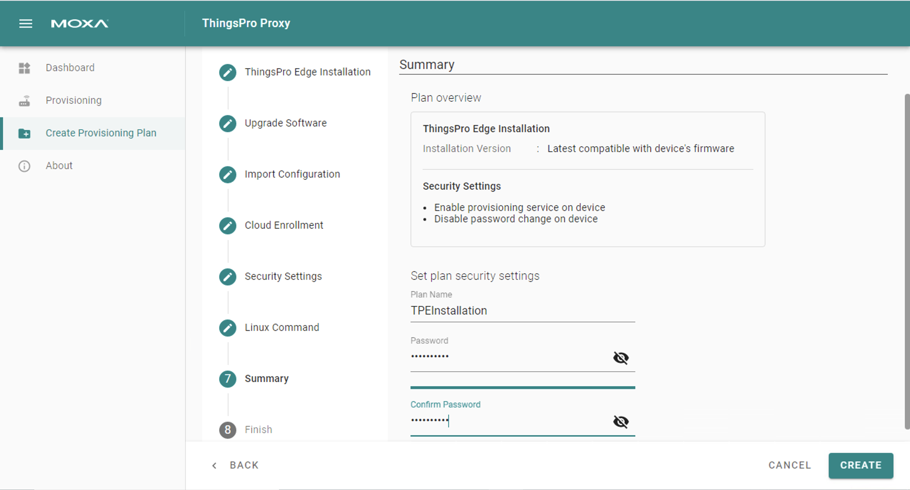
- Click DOWNLOAD & FINISH to download the plan. The plan will be downloaded as a *.zip file.
- Click on the Provisioning link.
- Choose the type of provisioning Targeted Provisioning or On-air Provisioning and click SCAN.
- Select devices to discover or press SCAN to re-scan the LAN for devices and click NEXT.

- Press BROWSE... to select a plan, enter the associated password, and click NEXT.
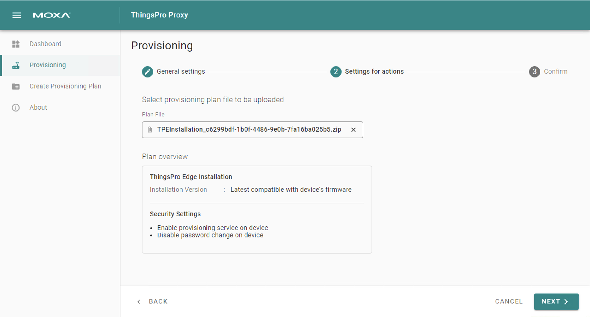
- Click APPLY.
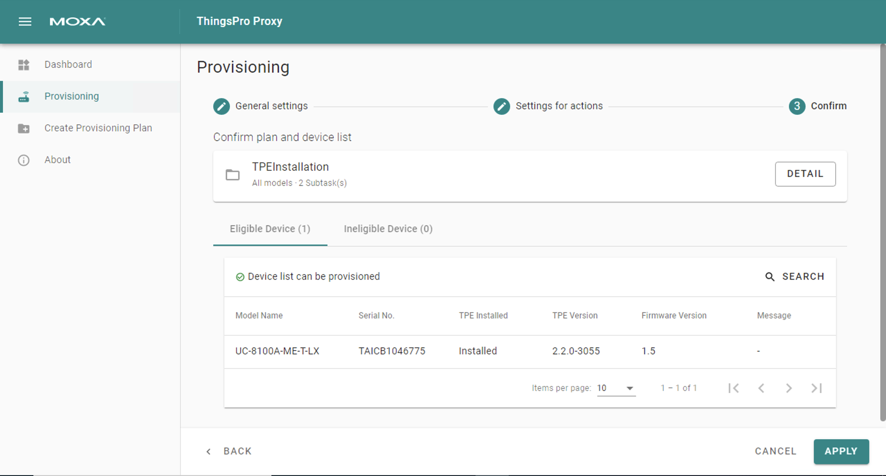
MQTT Client
Click MQTT Client, and you can add many connections to MQTT Broker.
Note that you need to create a connection first and select D2C telemetry messages to an MQTT broker.
To create an MQTT Client, following the steps below:
- Click ADD CONNECTION.
- Specify a Server (default port: 8883).
- Select an MQTT Version.
- Enter Client ID, Username, and Password.
- (Optional) Enable persistent session.
- Select a way of message QoS, and retain function on/off.
- (Optional) Enable SSL/TLC.
- (Optional) Enable will flag.
- (Optional) Select a way of message QoS and retain function for Will flag.
Once an MQTT Broker has been created, you can thus make a new telemetry message, following the steps below:
- Click + MESSAGE.
- Specify an output topic.
- Enter a time for the polling interval.
- Setup a threshold by size or a certain interval.
- Click NEXT.
- Select tags from provides (e.g., Modbus Master).
- (Optional) Enable custom payload by using the jq filter.
- Click SUBMIT.

NOTE: The values shown in the Custom Payload Result are examples and not the real values.
Sparkplug B
Sparkplug B is a specification designed specifically for IoT applications so that MQTT devices and applications can send and receive messages in a stateful way. ThingsPro Edge provides an interface to enable and configure Sparkplug B communication. The configuration process consissts of the following:
- Enabling Sparkplug
- Configuring a Broker
- Configuring a Telemety Message
Enabling Sparkplug
- Click on the Sparkplug B. link and use the scroll bar to enable Sparkplug B.
- Specify an Edge Node ID.
- Specify a Group ID.
- (optional) Specify a Primary Host ID.
- Click SUBMIT.
Configuring a Broker
- Click on the + CREATE link to create a broker for Sparkplug B.
- Specify a Server (default port: 8883).
- (optional) Enter Client ID, Username, and Password.
- (optional) Enable SSL/TLS and upload Client Certificate, Key, and Trusted Root CA.
- Click SUBMIT.
Configuring a Telemetry Message
- Click on the + MESSAGE link.
- Select tags from providers (e.g., Modbus Master).
- Select devices or system tags.
- Click NEXT.
- Select a publish mode.
- Select sampling mode.
- Click NEXT.
- (optional) Specify a description.
- Click SUBMIT.
Azure IoT Device
Click Azure IoT Edge. You can enable/ disable the Azure IoT Edge.
Note that you will need to register an AWS account to be able to manage the AWS IoT Core service for your IoT application.
To create the Azure IoT Device connectivity, following the steps below:
- Click to set connection.
- Enter Connection String.
- Select a connection protocol.
- Select an authentication Type.
- (Optional) Upload X.509 Certificate and Private Key.
- Click SUBMIT.
Telemetry Message
The simplest message type for sending IoT device data to your IIoT applications is a telemetry message. To create a telemetry message, do the following:
- In the CLOUD CONNECTIVITY section, select a cloud service provider.
- Click on the Telemetry Message tab.
- Specify an Output Topic name.
- Enter the Polling Interval in seconds.
- Setup a threshold by file size (bytes) or time interval (seconds).
- Click NEXT.
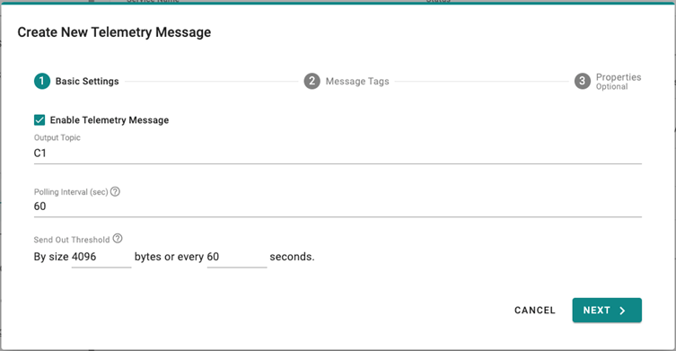
7. Select tags from provides (e.g., Modbus Master).
8. (Optional) Enable custom payload by using the jq filter.
9. Click NEXT.
10. (Optional) Enter Property Key and Value.
11. Click SUBMIT.

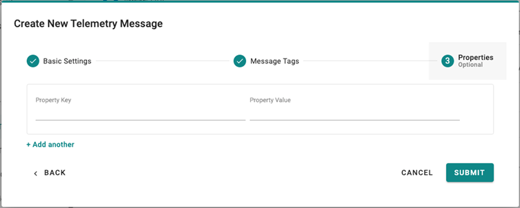 Device-to-Cloud (D2C) message policy allows you to transform default payload to your desired payload schema via the jq filter. For additional information, refer to the jq website (https://stedolan.github.io/jq/manual/).
Store and Forward
D2C messages can be cached in a specified location and sent to the cloud later. This feature will help you to keep the acquired data in a queue temporarily when the network between your IIoT Gateway and the cloud is disconnected and transmit them to its destination after the reconnection. To enable the function, click on the Store and Forward and select Enable Store and Forward. You can select a target disk and set a maximum storage cache, set a retention policy, and a TTL (Time to Live) value for the messages.
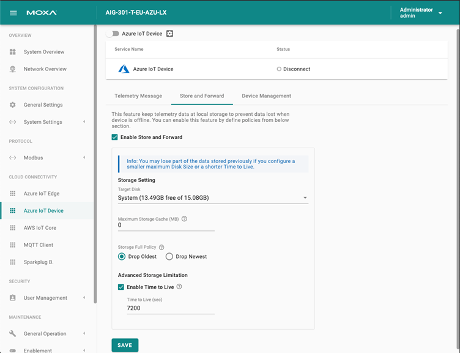
Device Management
Enabling this feature allows cloud service providers manage IoT devices remotely by creating a Device Twin.
Azure IoT Edge
Click Azure IoT Edge. You can enable/ disable the Azure IoT Edge. You can enroll the device via manual setting or DPS (Device Provisioning Service).
Note that you will need to register an Azure account to manage the Azure IoT Edge service for your IoT application.
To create Azure IoT Edge connectivity manually, following the steps below:
- Enable Azure IoT Edge.
- Select Manual.
- Enter Device Connection String (created by Azure IoT Device).
- Click SUBMIT.
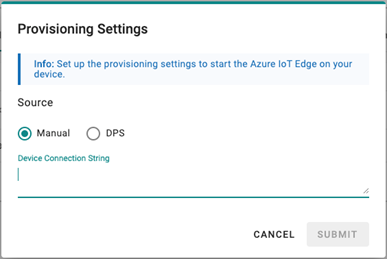
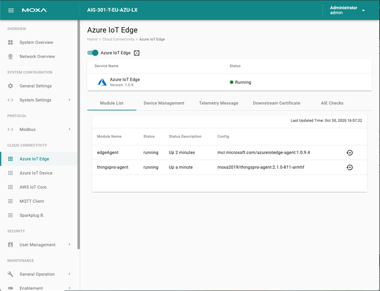
To create Azure IoT Edge connectivity via DPS, following the steps below:
- Enable Azure IoT Edge.
- Select DPS.
- Select TPM or Symmetric encryption (depends on what your device registered in Azure IoT Device).
- Enter Registration ID and Symmetric Key, if needed.
- Click SUBMIT
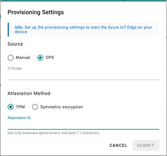
If you want to check Azure IoT Edge configurations, click Azure IoT Edge > AIE Checks and click CHECK. ThingsPro Edge checks the configurations and provides a result. More information about AIE Checks: https://github.com/Azure/iotedge/blob/master/doc/troubleshoot-checks.md
We recommend fixing the edgeAgent and edgeHub modules to version 1.0.10.3 from the Azure IoT Hub when using Azure IoT Edge on ThingsPro Edge V2.2.0.
Telemetry Message
The simplest message type for sending IoT device data to your IIoT applications is a telemetry message. To create a telemetry message, do the following:
- In the CLOUD CONNECTIVITY section, select a cloud service provider.
- Click on the Telemetry Message tab.
- Specify an Output Topic name.
- Enter the Polling Interval in seconds.
- Setup a threshold by file size (bytes) or time interval (seconds).
- Click NEXT.
7. Select tags from provides (e.g., Modbus Master).
8. (Optional) Enable custom payload by using the jq filter.
9. Click NEXT.
10. (Optional) Enter Property Key and Value.
11. Click SUBMIT.
Device-to-Cloud (D2C) message policy allows you to transform default payload to your desired payload schema via the jq filter. For additional information, refer to the jq website (https://stedolan.github.io/jq/manual/).
Store and Forward
D2C messages can be cached in a specified location and sent to the cloud later. This feature will help you to keep the acquired data in a queue temporarily when the network between your IIoT Gateway and the cloud is disconnected and transmit them to its destination after the reconnection. To enable the function, click on the Store and Forward and select Enable Store and Forward. You can select a target disk and set a maximum storage cache, set a retention policy, and a TTL (Time to Live) value for the messages.
Device Management
Enabling this feature allows cloud service providers manage IoT devices remotely throughout Device Twin and Direct Method technology.
Downstream Certificate (available only for Azure IoT Edge)
To prevent your device from connecting to potentially malicious gateways (Azure IoT Edge inside), you can upload an X.509 certificate, Private Key and Trusted CA Certificate. These certificates can be generated via ThingsPro Edge in addition to your private certificate.

ThingsPro Agent
ThingsPro Agent is a module running on Azure IoT Edge, which bridge couple important functions between ThingsPro Edge and Azure IoT Edge seamless. This document describes the detail technical specification those you shall know, when deal with ThingsPro Agent.
Install Module ThingsPro Agent on ThingsPro Edge
- Create iotedge device
- Setup ThingsPro Agent (Add module from Azure Portal)
- docker image:
moxa2019/thingspro-agent:2.1.1-amd64moxa2019/thingspro-agent:2.1.1-armhf
- Container Create Option
{ "HostConfig": { "Binds": [ "/var/thingspro/apps/cloud/data/setting/:/var/thingspro/cloudsetting/", "/run/:/host/run/", "/var/thingspro/data/:/var/thingspro/data/" ] } }
- docker image:
Module Twin - Reported Properties
Thingspro Agent exposes device's up to date configurations by reported properties when it connected. The reported properties be categorize by below.
Sections of Reported Properties
| No | Section | Description |
|---|---|---|
| 1 | applications | List all installed applications on ThingsPro Edge. |
| 2 | httpserver | Display HTTP Server setting, and status. |
| 3 | sshserver | Display SSH Server setting, and status. |
| 4 | discovery | Show discovery service status: enable / disable. |
| 5 | serialconsole | Show serial console status: enable / disable. |
| 6 | wan | Display network interface which connect to WAN. |
| 7 | route | List routing priority for each network interface. |
| 8 | dhcpservers | List DHCP Server status and configuration. |
| 9 | serials | List serial port configuration. |
| 10 | time | Display system time zone and NTP setting. |
| 11 | ethernets | List Ethernet interface status and configuration. |
| 12 | general | List device general properties, such as CPU type, Firmware version, ThingsPro Edge version and etc. |
| 13 | gps | Display GPS setting. |
| 14 | installations | Display OTA upgrade progress and result. |
| 15 | wifi | Display wifi setting. |
| 16 | cellulars | List cellular interface status and configuration. |
Sample of Reported Properties
{
"applications": {
"list": {
"0": {
"description": "MOXA Modbus TCP Client (Master)",
"desiredState": "ready",
"displayName": "Modbus TCP Client (Master)",
"hardwares": {
"arraySize": 0
},
"health": "good",
"icon": "/app-icons/modbusmaster-tcp.png",
"id": "modbusmaster-tcp",
"name": "modbusmaster-tcp",
"state": "ready",
"version": "3.14.0-278"
},
"arraySize": 1
}
},
"httpserver": {
"certFileName": "default.crt",
"httpEnable": true,
"httpPort": 80,
"httpsEnable": true,
"httpsPort": 8443,
"keyFileName": "default.key"
},
"sshserver": {
"enable": true,
"port": 22
},
"discovery": {
"enable": true
},
"serialconsole": {
"enable": true
},
"wan": {
"displayName": "LAN1",
"dns": {
"0": "10.128.8.5",
"arraySize": 1
},
"gateway": "10.144.51.254",
"ip": "10.144.48.128",
"name": "eth0",
"netmask": "255.255.252.0",
"type": "wan"
},
"route": {
"priorityList": {
"0": "Cellular1",
"1": "LAN1",
"arraySize": 2
},
"type": "route"
},
"dhcpservers": {
"0": {
"available": false,
"displayName": "LAN1",
"domainName": "",
"domainNameServers": {
"0": "8.8.8.8",
"1": "8.8.4.4",
"arraySize": 2
},
"enable": false,
"endIp": "192.168.3.250",
"id": 1,
"leaseTime": 3600,
"name": "eth0",
"netmask": "255.255.255.0",
"startIp": "192.168.3.200",
"status": false,
"type": "dhcpservers"
},
"arraySize": 1
},
"serials": {
"0": {
"baudRate": 9600,
"dataBits": 8,
"device": "/dev/ttyM0",
"displayName": "PORT 1",
"flowControl": "none",
"id": 1,
"mode": "rs232",
"parity": "none",
"stopBits": 1,
"type": "serials"
},
"arraySize": 1
},
"time": {
"ntp": {
"enable": false,
"interval": 7200,
"server": "pool.ntp.org"
},
"timezone": "Asia/Taipei",
"type": "time"
},
"general": {
"cpu": "ARMv7 Processor rev 2 (v7l)",
"description": "",
"deviceType": "gateway",
"firmwareVersion": "3.0",
"hostName": "Moxa",
"lastBootTime": "2019-11-13T11:42:51Z",
"lastRebootTime": "",
"memorySize": 524333056,
"modelName": "UC-8112-LX",
"serialNumber": "TAIAB1021075",
"thingsproVersion": "1.1.0-348",
"type": "general"
},
"ethernets": {
"0": {
"broadcast": "10.144.51.255",
"displayName": "LAN1",
"dns": {
"0": "10.128.8.5",
"arraySize": 1
},
"enable": true,
"enableDhcp": false,
"gateway": "10.144.51.254",
"id": 1,
"ip": "10.144.48.128",
"mac": "00:90:e8:77:06:61",
"name": "eth0",
"netmask": "255.255.252.0",
"status": "connected",
"subnet": "10.144.48.0",
"type": "ethernets",
"wan": true
},
"arraySize": 1
},
"gps": {
"interface": "",
"location": {
"lat": 14,
"lng": 15
},
"mode": "manual",
"type": "gps"
},
"installations": {
"completedTask": 0,
"id": 3,
"isDeleted": false,
"jobID": 3,
"lastState": "",
"owner": "admin",
"parameter": {
"download": false,
"install": true,
"jobID": 2
},
"state": "created"
},
"wifi": {
"0": {
"ap": {
"band": "band24",
"broadcastSsid": true,
"channel": 6,
"region": "TW",
"security": {
"mode": "wpa2",
"password": "",
"encryption": "aes"
},
"ssid": "moxa-sample-ap"
},
"enable": true,
"id": 1,
"type": "wifi",
"name": "wlan0",
"mode": "ap"
},
"arraySize": 1
},
"cellulars": {
"0": {
"autoDetect": false,
"available": true,
"capabilities": {
"sim": 1
},
"currentProfileId": 0,
"displayName": "Cellular1",
"enable": false,
"iccid": "",
"id": 1,
"imei": "",
"imsi": "",
"keepalive": {
"enable": false,
"intervalSec": 120,
"targetHost": "8.8.8.8"
},
"mac": "02:01:02:18:00:0b",
"module": "u-blox TOBY-L2 series",
"name": "usb0",
"operatorName": "",
"pinRetryRemain": 0,
"profileTimeout": 140,
"profiles": {
"0": {
"id": 1,
"init": {
"0": "sim:1",
"arraySize": 1
},
"name": "SIM1",
"pdpContext": {
"apn": "internet",
"auth": {
"password": "",
"protocol": "none",
"username": ""
},
"id": 1,
"static": true,
"type": "ipv4"
},
"pinCode": "0000"
},
"arraySize": 1
},
"rat": "",
"status": "disconnected",
"type": "cellulars",
"wan": true
},
"arraySize": 1
}
}
Module Twin - Desired Properties
ThingsPro Agent allow you to re-configure device and turn on/off services via Desired Properties. In current version, ThingsPro Agent allow below sections to be update via Desired Properties.
Sections of Desired Properties
| No | Section | Description |
|---|---|---|
| 1 | httpserver | To enable/disable and change HTTP(s) port. |
| 2 | sshserver | To enable/disable and change SSH port. |
| 3 | discovery | To enable/disable device discovery service. |
| 4 | serialconsole | To enable/disable serial console port. |
| 5 | dhcpservers | To setup DHCP Server configuration. |
| 6 | serials | To setup serial port configuration. |
| 7 | time | To setup time zone, and enable/disable and setup NTP server. |
| 8 | ethernets | To setup Ethernet configuration. |
| 9 | general | To update host name and device description. |
| 10 | gps | To switch GPS mode to auto or manual. |
| 11 | wifi | To setup Wi-Fi AP configuration. |
| 12 | cellulars | To setup cellulars configuration. |
Note:
There are two keys that is commonly used in the desired properties:
- id: A device may own multiple interfaces of same kind resource, id specifies which interface is to be configured. id starts from 0.
- arraySize: Azure device twin currently does not support array, so an array is encoded to a object containing children objects and an arraySize key. This value should match the number of children objects, else the remaining objects will be discarded.
1. HTTP(s) Server
-
Update HTTP(s) Server configuration
{ "desired": { "httpserver": { "httpEnable": true, "httpPort": 80, "httpsEnable": true, "httpsPort": 8443 } } }
2. SSH Server
-
Update SSH Server configuration
{ "desired": { "sshserver": { "enable": true, "port": 22 } } }
3. Discovery Service
-
Update Discovery Service status
{ "desired": { "discovery": { "enable": true } } }
4. Serial Console Port
-
Enable / Disable Serial Console Port
{ "desired": { "serialconsole": { "enable": true } } }
5. DHCP Server
-
Update DHCP Server
{ "desired": { "dhcpservers": { "0": { "id": 1, "enable": true, "startIp": "192.168.3.100", "endIp": "192.168.3.200", "netmask": "255.255.255.0", "domainNameServers": { "0": "8.8.8.8", "arraySize": 1 }, "domainName": "example.com", "leaseTime": 2592000 }, "arraySize": 1 } } }
6. Serial Port
-
Update Serial Port to rs232
{ "desired": { "serials": { "0": { "id": 1, "mode": "rs232", "displayName": "PORT 1", "baudRate": 115200, "parity": "none", "dataBits": 8, "stopBits": 1, "flowControl": "software" }, "arraySize": 1 } } }
| No | Name | Available Values |
|---|---|---|
| 1 | mode | rs232, rs422, rs4852w, rs4854w |
| 2 | baudRate | 300, 600, 1200, 1800, 2400, 4800, 9600, 19200, 38400, 57600, 115200, 230400, 460800, 921600 |
| 3 | parity | none, even, space, mark |
| 4 | dataBits | 5,6,7,8 |
| 5 | stopBits | 1,2,1.5 |
| 6 | flowControl | none, hardware, software |
7. Time Service
-
Update NTP Settings
{ "desired": { "time": { "ntp": { "enable": true, "interval": 6000, "server": "tock.stdtime.gov.tw" } } } } -
Update Time zone
{ "desired": { "time": { "timezone": "Asia/Taipei" } } }Timezone list can be found at https://en.wikipedia.org/wiki/List_of_tz_database_time_zones
8. Ethernet
-
Update an Ethernet Interface to Dynamic IP
{ "desired": { "ethernets": { "0": { "id": 1, "enable": true, "enableDhcp": true, "wan": true }, "arraySize": 1 } } } -
Update an Ethernet Interface to Static IP
{ "desired": { "ethernets": { "0": { "id": 1, "dns": { "0": "1.2.3.4", "arraySize": 1 }, "enable": true, "enableDhcp": false, "gateway": "1.2.3.5", "ip": "1.2.3.6", "netmask": "255.255.255.0", "wan": true }, "arraySize": 1 } } }
9. General
-
Update device host name
{ "desired": { "general": { "hostName": "MyHost" } } } -
Update device description
{ "desired": { "general": { "description": "MyDevice" } } }
10. GPS
-
Update GPS lat, lng by manual mode
{ "desired": { "gps":{ "mode": "manual", "location": { "lat": 11, "lng": 12 } } } } -
Update GPS by auto mode
{ "desired": { "gps":{ "mode": "auto", "interface": "/dev/ttyUSB0" } } }
11. Wi-Fi
-
Enable / Disable Wi-Fi AP mode
{ "desired": { "wifi": { "0": { "ap": { "band": "band24", "broadcastSsid": true, "channel": 6, "region": "TW", "security": { "mode": "wpa2", "password": "", "encryption": "aes" }, "ssid": "moxa-sample-ap" }, "enable": true, "id": 1, "type": "wifi", "name": "wlan0", "mode": "ap" }, "arraySize": 1 } } }
12. Cellulars
- Update cellular pin code
{ "desired": { "cellulars": { "0": { "autoDetect": false, "available": true, "capabilities": { "sim": 1 }, "currentProfileId": 0, "displayName": "Cellular1", "enable": false, "iccid": "", "id": 1, "imei": "358503060483337", "imsi": "", "keepalive": { "enable": false, "intervalSec": 120, "targetHost": "8.8.8.8" }, "mac": "02:01:02:18:00:0b", "module": "u-blox TOBY-L2 series", "name": "usb0", "operatorName": "", "pinRetryRemain": 0, "profileTimeout": 140, "profiles": { "0": { "id": 1, "init": { "0": "sim:1", "arraySize": 1 }, "name": "SIM1", "pdpContext": { "apn": "internet", "auth": { "password": "", "protocol": "none", "username": "" }, "id": 1, "static": true, "type": "ipv4" }, "pinCode": "0000" }, "arraySize": 1 }, "rat": "", "signal": { "csq": 0, "ecio": 0, "indicator": "", "level": 0, "rat": "", "rscp": 0, "rsrp": 0, "rsrq": 0, "rssi": 0, "rxqual": 0 }, "status": "disconnected", "type": "cellulars", "wan": true }, "arraySize": 1 } } }
Support Commands for Direct Methods
ThingsPro Agent offered below 6 direct methods. You can invoke them when device is on-line.
| No | Method Name | Description |
|---|---|---|
| 1 | thingspro-api-v1 | An universal direct method, allow to invoke almost all Restful API of ThingsPro Edge. |
| 2 | system-reboot | A direct method to restart Moxa's device. |
| 3 | thingspro-applications-control | To control application run time on device. |
| 4 | thingspro-software-upgrade | To perform software upgrade over the air. |
1. ThingsPro Agent Universal Method
An universal direct method, to invoke almost all Restful API on ThingsPro Edge device. You can get ThingsPro Edge Restful API document at here.
-
Method Name:
thingspro-api-v1 -
Request Payload: (Example to set SSH configuration)
{ "path":"/system/sshserver", "method":"PUT", "headers":[], "requestBody": {"enable": true, "port": 22} }No Name Description 1 path ThingsPro Edge Restful API endpoint. 2 method The method which associated with API endpoint. 3 headers It shall always be application/json. 4 requestBody The post data which required by API endpoint. -
Response:
{ "status":200, "payload":{"data":{"enable":true,"port":22}} } -
Example screen shot

Note : Please change below time out parameters to prevent any exception.
- Connection Timeout with 30 seconds
- Method Timeout with 60 seconds.
2. Restart Device
This command will trigger device to reboot immediately.
-
Method Name:
system-reboot -
Request Payload:
{} -
Response:
{ "status": 200, "payload": { "data": "rebooting" } }
3. Control Application runtime
This direct method offers you a quick way to start/stop/restart applications which running on ThingsPro Edge.
-
Method Name:
thingspro-applications-control -
Request Payload:
{ "appName": "modbusmaster-tcp", "command": "stop" }No Name Description 1 appName The name of applications running and managed by ThingsPro Edge. You can get application list by ThingsPro Restful API. 2 command Support commands:
- start
- stop
- restart -
Response:
{ "status": 200, "payload": { "data": "" } }
4. Software Upgrade
This direct method allow you to download upgrade software over the air.
-
Method Name:
thingspro-software-upgrade -
Example to trigger download and installation at one upgrade job
- Request Payload:
{ "downloadURL": "http://xxx/edge/87/doc_0.1.0-87_armhf.yaml", "runInstallation": true }No Name Description 1 downloadURL The URL point to upgrade software location. 2 runInstallation value true : The installation task will auto start after download task completed. - Response:
{ "status": 200, "payload": { "data": { "id": 1 } } } -
Example to trigger a download software only upgrade job
- Request Payload:
{ "downloadURL": "http://xxx/edge/87/doc_0.1.0-87_armhf.yaml", "runInstallation": false }No Name Description 1 downloadURL The URL point to upgrade software location. 2 runInstallation value false : The installation task doesn't start by default. You can invoke next direct method to launch it. - Response:
{ "status": 200, "payload": { "data": { "id": 2 } } } -
Example to trigger an installation for a upgrade job id
- Request Payload:
{ "id": 2, "runInstallation": true }No Name Description 1 runInstallation Value shall always be true at this case. 2 id The Id returned from previous direct method. - Response
{ "status": 200, "payload": { "data": { "id": 3 } } }
Note:
-
ThingsPro agent will send back upgrade progress and status via reported properties.
-
Report download progress

-
Download success

-
-
ThingsPro Edge allow only one active software upgrade job once.
Develop An Azure IoT Edge module In ThingsPro Edge
IoT Edge Module (Azure Documents)
IoT Edge Module Example
- Here is an example for you to refer to develop a IoT Edge module to complete the requirements:
- Obtain and modify device properties by module twin.
- Upload ThingsPro tags data by D2C message.
- Update tag value by direct method.
- soure code
Preparation Before Use The Example Module
- modbus tcp device setup
Here I setup modbus tcp master to get the switch value of the meter. 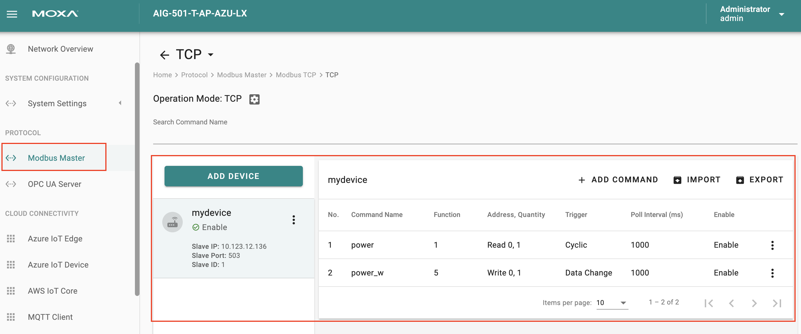
- Azure IoT Edge setup
Set up and make sure ThingsPro's Azure IoT Edge service is connected successfully. 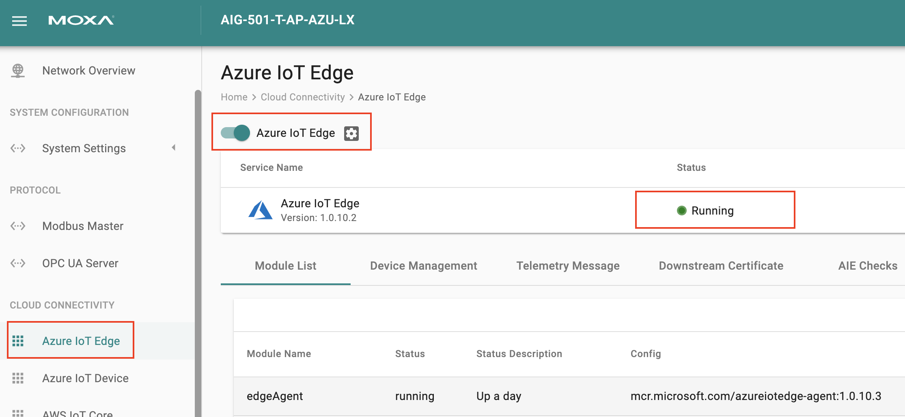
- Setup the example module on your IoT Edge device
module name: test
image URL:moxa2019/thingspro-sample:0.0.3-amd64
container create options:{ "HostConfig": { "Binds": [ "/var/thingspro/data/:/var/thingspro/data/" ] } } - After IoT Edge deployment is complete, you can see the test module on the ThingsPro's Azure IoT Edge service page
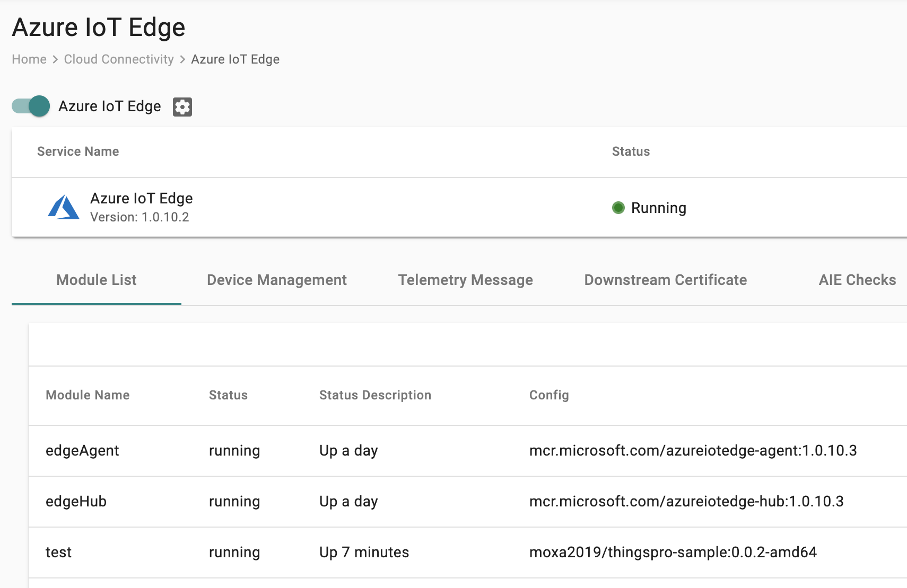
How To Use The Example Module
- Obtain and modify device properties by module twin.
The example module supports modifying the configuration of device description.
Fill in the desired properties and click save in the IoT Edge's module twin page.
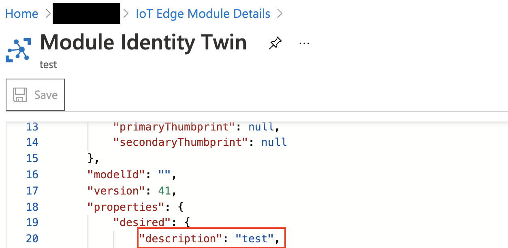On the ThingsPro webpage, you can see that the property has been modified. 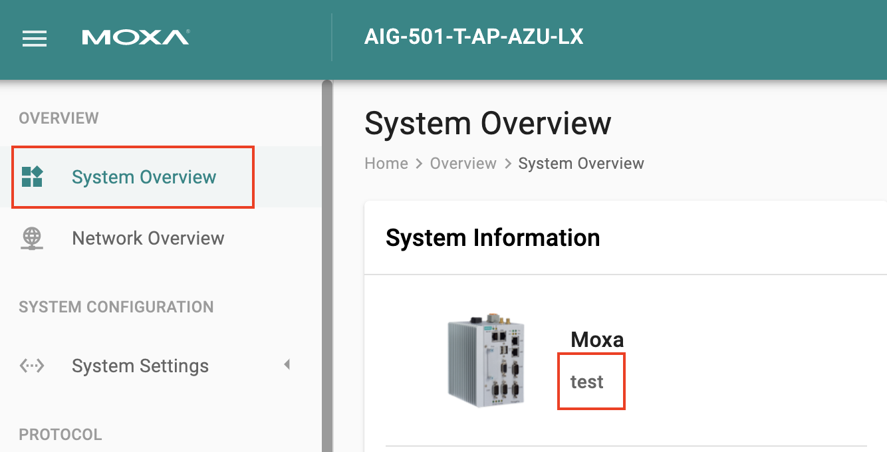
- Upload ThingsPro's tags data by D2C message.
The example module supports modifying the configuration of ThingsPro tags upload.
Fill in the desired properties and click save in the IoT Edge's module twin page.{ "uploadTags": [ { "providerName": "modbus_tcp_master", "moduleName": "mydevice", "tagName": "power" } ], "uploadInterval": 5 }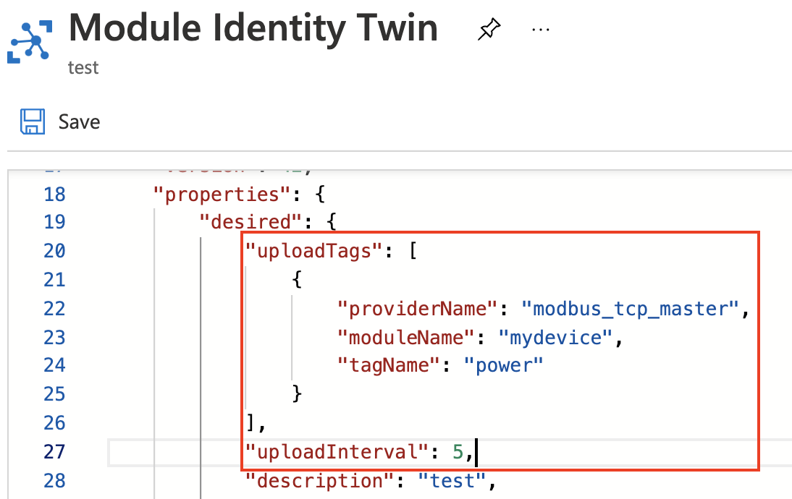
The message has been sent to the Azure IoTHub.
Here I use the Azure IoTHub plugin on vscode to monitor D2C message.

- Update ThingsPro's tag value by direct method.
Commands supported by the example module:
command name:tagWrite
command payload:{ "providerName": "modbus_tcp_master", "moduleName": "mydevice", "tagName": "power_w", "dataType": "boolean", "dataValue": true }Invoke module command in IoT Edge device's direct method page. 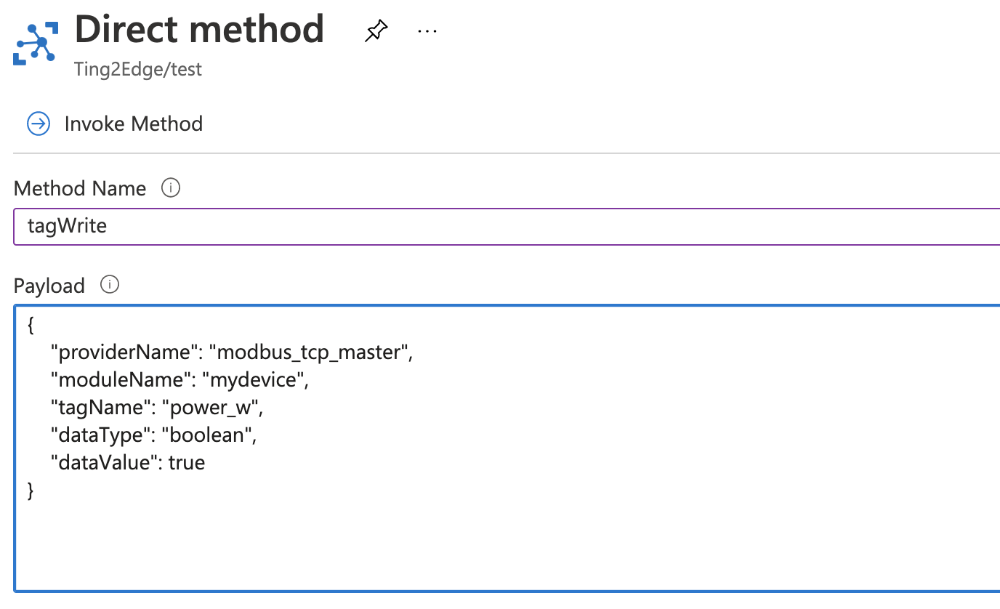 You can monitor that the value of power is updated to
true. 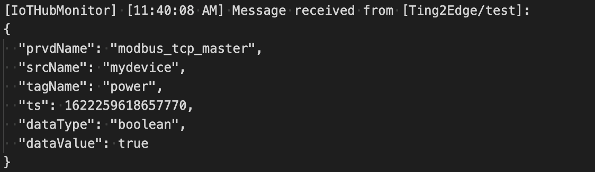
AWS IoT Core
Click AWS IoT Core, and you can enable/ disable the AWS IoT Core. To create the AWS IoT Core connectivity, following the steps below:
- Click to set connection.
- Enter Host, Port (default: 8883).
- Enter ThingID.
- Select a way of message QoS.
- Upload X.509 Certificate, Private Key, and (optional) Trusted Root CA.
- Click SAVE.
Telemetry Message
The simplest message type for sending IoT device data to your IIoT applications is a telemetry message. To create a telemetry message, do the following:
- In the CLOUD CONNECTIVITY section, select a cloud service provider.
- Click on the Telemetry Message tab.
- Specify an Output Topic name.
- Enter the Polling Interval in seconds.
- Setup a threshold by file size (bytes) or time interval (seconds).
- Click NEXT.
7. Select tags from provides (e.g., Modbus Master).
8. (Optional) Enable custom payload by using the jq filter.
9. Click NEXT.
10. (Optional) Enter Property Key and Value.
11. Click SUBMIT.
Device-to-Cloud (D2C) message policy allows you to transform default payload to your desired payload schema via the jq filter. For additional information, refer to the jq website (https://stedolan.github.io/jq/manual/).
Store and Forward
D2C messages can be cached in a specified location and sent to the cloud later. This feature will help you to keep the acquired data in a queue temporarily when the network between your IIoT Gateway and the cloud is disconnected and transmit them to its destination after the reconnection. To enable the function, click on the Store and Forward and select Enable Store and Forward. You can select a target disk and set a maximum storage cache, set a retention policy, and a TTL (Time to Live) value for the messages.
Device Management
Enabling this feature allows cloud service providers manage IoT devices remotely throughout Device Shadow and jobs.
Data Ingestion: Modbus Connections
Go to Modbus > Modbus Master to view all the Modbus TCP and RTU/ASCII devices. In addition to setting up Modbus TCP and Modbus RTU devices, you can also enable/disable Device Fail Event and Command Fail Event of the Modbus Master services here.
To add a Modbus TCP device, do the following:
-
In the Modbus TCP section, select the TCP option.
-
Click ADD DEVICE. a. Specify the Device Name. b. Enter the Slave IP address. c. Specify the Slave Port and Slave ID. d. Click NEXT.

-
Click + ADD COMMAND.
-
Select or specify the function and the corresponding settings.
-
Select the Tag Type.
-
Click DONE.
-
Click NEXT.
-
Click DONE to save the settings.

To configure a Modbus TCP interface, select the TCP option and then click  You can also specify Initial Delay, Maximum Retry, and Response Timeout (ms) values for the interface.
You can also specify Initial Delay, Maximum Retry, and Response Timeout (ms) values for the interface.
To add a Modbus RTU device, do the following:
-
In the Modbus RTU/ASCII section, click on the COM (RTU) button.
-
Click ADD DEVICE. a. Specify the Device Name and Slave ID. b. Click NEXT.

-
Click + ADD COMMAND.
-
Select or specify the function and the corresponding settings.
-
Click NEXT.
-
Click DONE to save the settings.

To configure Modbus RTU settings, select the RTU option and click  . You can also specify Initial Delay (ms), Maximum Retry, and Response Timeout (ms) values for the interface. To manually set the inter-frame delay and inter-character timeout, you can uncheck the items and specify a time (ms).
. You can also specify Initial Delay (ms), Maximum Retry, and Response Timeout (ms) values for the interface. To manually set the inter-frame delay and inter-character timeout, you can uncheck the items and specify a time (ms).
Note: The inter-frame delay and inter-character timeout settings are only available for Modbus RTU.
OPC UA Server
Go to OPC UA Server to configure the OPC UA Server. You can also enable/ disable system event of the OPC UA services here.
To enable the OPC UA Server, do the following:
-
Click LAN
-
Click Connection EDIT to enable this server. The service default is enabled with port 4840.
-
(Optional) Click Security EDIT to edit Policies, User Authentication and Certificates.
-
(Optional) Click Manage Account Details to create new accounts. The default account/ password is admin/ moxa.
-
(Optional) Click Manage Certficate Details to download the server certificate or upload a client certificate.
-
(Optional) Click Advacned > EDIT. You can configure the settings of subscription.
-
-
Click ADD TAGS and select providers and tags.
-
Click DONE
-
Click GO TO APPLE SETTINGS.
-
Click APPLY.
Dashboard
System Overview
The dashboard shows the system status of the device, including hardware information, running applications/processes, CPU/Memory, and storage usage.

Editing User Profiles
Click on the Administrator button on the upper-right corner of the Overview page. You can view your profile, change the password, and switch to the Dark Theme here.
Network Overview
Displays information on the WAN and LAN interfaces and the network traffic passing through the interfaces.
WAN
Displays information on the data sent and received through the WAN interfaces. You can select the interface the you want to monitor. In addition, other details on the usage of the WAN interfaces is displayed on the page. The information is refreshed every 10 seconds.
LAN
Information on the LAN interfaces is organized under the LAN tab and includes information on the usage of the interfaces and the traffic passing through them.

To monitor the interfaces in real time, click to auto refresh the data every 10 seconds.
General Settings
Configuring the Server/host Name
Go to General Settings > System to specify a new server/host name and enter a description for the device.
Configuring the System Time
Go to General Settings > Time to select a time zone. Choose between the Manual or Auto option to update the system time.
Configuring GPS
Go to General Settings > GPS to view the GPS location of the device on a map. You may check the Automatically adjust coordinates for GPS changes option if you want the system to automatically update the device coordinates.
System Settings
Configuring the IP Addresses of Interfaces
Go to System Settings > IP Address to view and configure the IP addresses of the Ethernet and Wi-Fi interfaces. LAN1 can be configured both as a WAN and LAN interface.

- LAN1 can be a WAN interface with the DHCP client enabled by default.
- LAN2 uses static IP by default:
- IP Address : 192.168.4.127
- Subnet Mask: 255.255.255.0
Configuring Cellular Settings
Go to System Settings > Cellular to view the current cellular settings. You can enable/disable cellular connectivity on your device, create profiles and manage Profile Settings, and enable/disable the connection Keep-alive function to optimize the cellular connection.

You can create customized cellular profiles by choosing the Manual option in the Profile Settings section. A list of all the profiles in the system is displayed. Create, Edit, or Delete cellular profiles here.
To create a new cellular connection profile, do the following:
- Click + CREATE.
- Specify a unique Profile Name.
- Specify the target SIM card.
- Enter the PIN Code, if your SIM card requires it. NOTE: Three wrong attempts will lock the SIM card.
- Choose a Carrier. (NOTE: This option is displayed only if the cellular module supports carrier switching.)
- Refer to instructions from your cellular carrier to select Static or Dynamic APN and configure the corresponding settings.
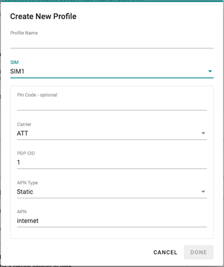
- Click DONE.
- On the Cellular setting page, click SAVE.
When you click SAVE on the Cellular section, the module is restarted to apply the changes. The settings will take effect after the cellular module is successfully initialized.
The Keep-alive function will help you maintain the connection between your device and the carrier service by pinging a specific host on the Internet at periodic intervals.
In some circumstances, a system reboot might bring an unstable or malfunctioning device back to normal state. To enable automatic system reboot, select the Reboot the unit when ping to the target host failed continuously for a certain amount of time option and specify a reboot interval.
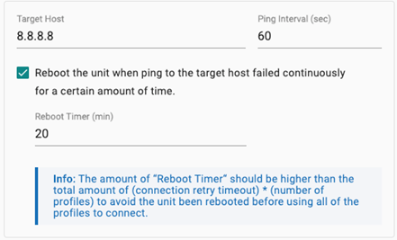
Go to Network Overview > WAN if you want to check the cellular network's connection status afterward.

Configuring the HTTP/HTTPS Service
Go to System Settings > HTTP/HTTPS to enable/ disable the HTTP and HTTPS service on ThingsPro Edge for specific ports. The default ports for HTTP and HTTPS are 80 and 8443 respectively.

You can import a trusted SSL certificate (with private key) to ensure secure access to ThingsPro Edge.
Configuring Serial Ports
Go to Systems Settings > Serial to view all the serial ports, change the settings, and to clone a serial port.
To change the settings of a serial port, click the icon. You can modify the Baud Rate, Parity, Data Bits, Stop Bits, and Flow Control, or specify an Alias and assign an interface.

The settings of one serial port can be cloned and applied to other serial ports using SAVE & CLONE.
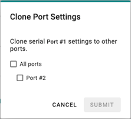
Configuring the DHCP Server
Go to System Settings > DHCP Server to view the DHCP settings. NOTE The DHCP service is only available on LAN and static IP interfaces.

Configuring Wi-Fi
Go to System Settings > Wi-Fi to enable/disable the Wi-Fi interface for Client or AP mode.

To configure a Wi-Fi client, you need to connect to an access point (AP). To add an AP, click + CREATE and select Create by SSID or Created by Scan Results.
 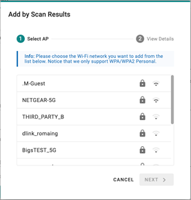
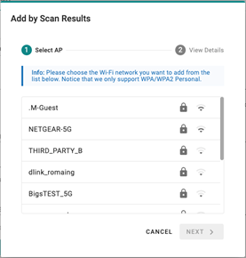
The Check-alive function can be used to ensure Internet connectivity for the development. You can specify a target host and ping interval (sec).
To configure a Wi-Fi AP mode, do the following:
- Specify an SSID. You can also choose to broadcast the SSID.
- Specify a password for the connection.
- Select a Wi-Fi band.
- Select a region and channel.
- Click SAVE.
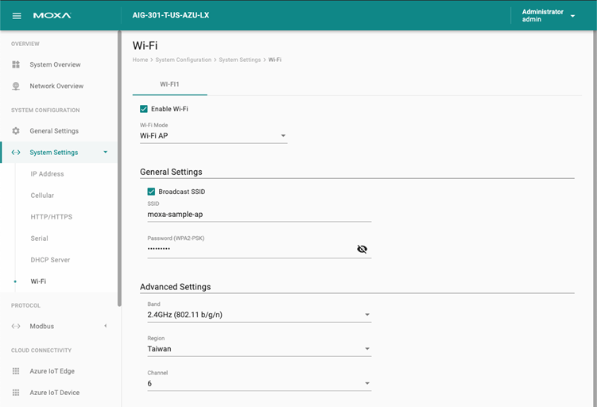
To configure Wi-Fi IP address, go to System Settings > IP Address > Wi-Fi.
To enable DHCP Server service for the Wi-Fi AP mode, go to System Settings > DHCP Server > Wi-Fi.
Go to Network Overview > WAN to check the Wi-Fi network's connection status afterward.
Importing/Exporting the Configuration File
Click General Operation > Configuration to export/ import the gateway configuration file with a given password. The exported configuration file will be compressed to the tar.gz format and downloaded on to your computer.
Exporting the System Log File
Click System Log to export the system log file and specify the location to save the system logs.

To use the storage space effectively, you can Enable Time to Live and give the maximum space to store the system logs.
Viewing Event Logs
Click Event Logs to view all event logs categorized by Severity, Event Name, and Category. You can use the SEARCH function to filter the Event logs to find a specific event. The Event Logs can be exported as a *.zip file and downloaded on to your computer.
Configuring Event Log Settings
ThingsPro Edge allows you to choose the type of events to be stored, specify where to keep the logs, and the maximum storage size to use. Click the Event Settings to access these settings.
You can select the type of events to be stored by clicking on the different levels of the Severity: Alert, Warning, or Info. You can also select the individual event that you want to keep.
Click  to specify the location to store the event logs and the cache size (MB). Click SUBMIT to confirm your settings.
to specify the location to store the event logs and the cache size (MB). Click SUBMIT to confirm your settings.
After all the settings are done, click SAVE to save and apply the settings.
User Management
You can maintain ThingsPro Edge user accounts and assign a role with specific permissions to each account. These functions allow you to track and control who accesses this system via ThingsPro Edge Web GUI and API and manage the permissions.
Users
You can View, Create, Edit, Deactivate, and Delete ThingsPro Edge user accounts. In the main menu, go to Security > User Management > Users to manage user accounts.
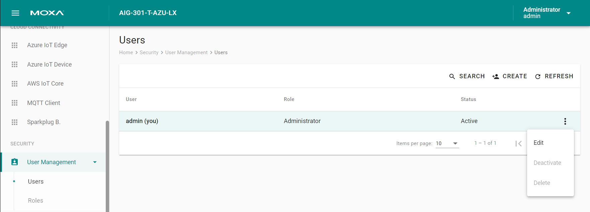
Creating a New User Account
Click on the  to create a new user account. In the dialogue box that is displayed, fill up the fields and click SUBMIT.
to create a new user account. In the dialogue box that is displayed, fill up the fields and click SUBMIT.
NOTE: We recommend that you specify a strong password that is at least eight characters long consisting of at least one number and at least one special character.
| Password Policy | Valid Password |
|---|---|
| 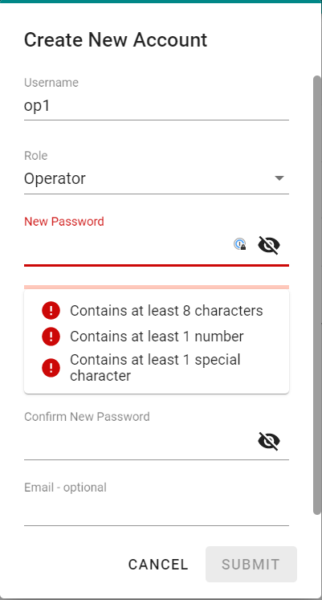 | 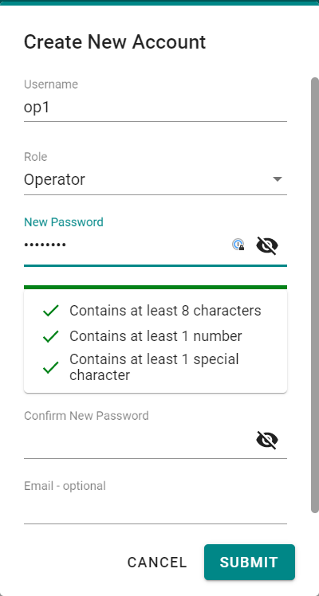 |
Managing Existing User Accounts
To manage an account, click on the pop-up menu icon ( ) for the account.
) for the account.

| Function | Description |
|---|---|
| Edit | Change the role, email, or password of an existing account. |
| Deactivate | Disallow the user from loggin in to ThingsPro Edge. |
| Delete | Delete the user accouont. NOTE: This operation is irreversible. |
NOTE: You cannot Deactivate or Delete the last remaining account with an Administrator role. This is to prevent an unauthorized account from fully managing this system. When the system detects only one active account with the Administrator role is selected, all items in the pop-up menu will be greyed-out.
User Roles
You can View, Create, Edit, and Delete user roles in ThingsPro Edge. In the main menu, go to Security > User Management > Roles to manage the user roles.

Click on the to create a new user account. Specify a unique name to the role and assign appropriate permissions. When you are done, click on the button "SUBMIT" to create the role in the system.
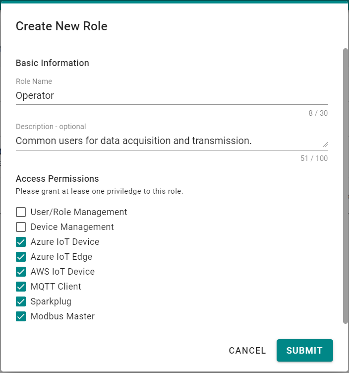
You can Edit the settings or Delete an existing role by clicking on the pop-up menu icon ( ) next to the role.
) next to the role.
Robust OTA Upgrade

- Download and install
- Resume download from the last breakpoint
- Redundant BIOS and Linux Kernel
- Guaranteed download completion before starting the upgrade
- Built-in security
- Mutual X.509 certificate authentication between IIoT gateways and services
- Encrypted communication between IIoT gateways and services
- Manage from the Azure portal
- Trigger OTA upgrade command from Azure IoT Hub
- Continuous reporting of the upgrade progress to Azure IoT Hub.
- Intelligence
- Self-evaluation check before performing an upgrade process to ensure that the conditions permit an upgrade.
- Auto rollback to the last wellpoint if an installation process failed. For example, an power outage. NOTE: For this feature, you must enable the "take snapshot" function, which is disabled by default.
Upgrading the ThingsPro Edge
To upgrade the ThingsPro Edge with Moxa's software packages, click General Operation > Software Upgrade. There are two ways to upgrade ThingsPro Edge: Upgrade from the local drive or Download it over-the-air.
-
Upgrade from the local driver
Select the software package file in *.deb file format on your computer.
-
Download it over-the-air
Specify the URL for your repository or trusted source to download the software packages (*.yaml) from.
Eligible Devices
| Series | Model | Revision | Firmware Version | |
|---|---|---|---|---|
| AIG-300 | AIG-301-US-AZU-LX | 1.0.0 | 1.1 | |
| AIG-301-EU-AZU-LX | 1.0.0 | 1.1 | ||
| AIG-301-AP-AZU-LX | 1.0.0 | 1.1 | ||
| AIG-301-CN-AZU-LX | 1.0.0 | 1.1 | ||
| AIG-301-AZU-LX | 1.0.0 | 1.1 | ||
| UC-8200 | UC-8210-T-LX | 1.0.0/1.0.1 | 1.3 | |
| UC-8210-T-LX-S | 1.0.0/1.0.1 | 1.3 | ||
| UC-8220-T-LX | 1.0.0/1.0.1 | 1.3 | ||
| UC-8220-T-LX-US-S | 1.0.0/1.0.1 | 1.3 | ||
| UC-8220-T-LX-EU-S | 1.0.0/1.0.1 | 1.3 | ||
| UC-8220-T-LX-AP-S | 1.0.0/1.0.1 | 1.3 | ||
| UC-8100A-ME-T | UC-8112A-ME-T-LX | 1.0.2/1.0.3 | 1.5 | |
| UC-8112A-ME-T-LX-AP | 1.0.2/1.0.3 | 1.5 | ||
| UC-8112A-ME-T-LX-US | 1.0.2/1.0.3 | 1.5 | ||
| UC-8112A-ME-T-LX-EU | 1.0.2/1.0.3 | 1.5 |
Software Development
ThingsPro Edge offers rich RESTful APIs to help SI/ISVs leverage or integrate many of the capabilities to simplify solution development. Please refer to the online document for the list of Open API and the instruction of thingspro-agent utility.
- ThingsPro Edge v2.2.0 Open API: https://thingspro-edge.moxa.online/v2.2.0/core/index.html
- ThingsPro Edge v2.2.0 Azure IoT Edge document: https://thingspro-edge.moxa.online/v2.2.0/thingspro-agent/index.html
Linux Development Note
If the developers want to add the missing features or extend the functions provided by ThingsPro Edge, the developers can log in to the computer and run their programs.
ThingsPro Edge provides general settings, network configuration, and so on. Hence, the developers need to pay attention to this notice to avoid using some system operations and commands to unstable the system.
Linux development is not recommended in the field in the production environment. Please do develop and test in the lab to reach the device before going to production.
Things MUST be avoided
Items listed in the section usually managed by ThingsPro Edge. You may able to modify the configuration for a while then get reverted.
- Networking: IP Settings, Routing, Ethernet, Wi-Fi, Cellular, including commands such as
ip,dhclient,dhcpd,route,iw,hostapd,wpa_supplicant,cell_mgmt - LED control:
mx-led-ctl - Serial:
mx-uart-ctl - Time:
timedatectl,ntpd - SD card: Auto-mounted configuration
- Snapshot:
mx-snapshot-ctl,mx-system-ctl
Things COULD be done with caution
Items listed in the section are not managed by ThingsPro Edge. Please modify carefully in case of breaking ThingsPro Edge.
-
Networking:
iptables(Don't modify the MOXA-* CHAINS, everything else should be ok) -
Package Management:
apt-get(Read the warning messages carefully every time before install/upgrade/remove packages)
- By default, ThingsPro Edge comments out all the sources in the source list (
/etc/apt/sources.list)
- By default, ThingsPro Edge comments out all the sources in the source list (
Notes
-
Web Server is bound to the following:
- HTTP : 80 port
- HTTPS : 8443 port
-
SSH Server is bound to port 22 but disabled by default. You can turn it via the Web UI or Restful API.
-
ICMP protocol is disabled by default.
-
All containers' logs are integrated into the Linux journal service. You can monitor the Azure IoT Edge containers' logs using the following commands.
journalctl CONTAINER_NAME=edgeAgent -f journalctl CONTAINER_NAME=edgeHub -f journalctl CONTAINER_NAME=thingspro-agent -f
Known Issues & Limitations
-
Wi-Fi Client scanning function only works when in Wi-Fi Client mode. If you are switching the mode from AP to Client, save the configuration before clicking the SCAN button.
-
In the Wi-Fi Client mode, you might not be able to see all the status changes if there are more than two AP profiles in the AP list.
-
The "Go to edit" link is displayed in *Network Overview even when the user doesn't have permissions.
-
macOS users can't login to Web GUI via Wi-Fi interfaces.
-
When the IP is changed, the certificate for HTTPS will be re-generated. As a result, users will be required to refresh their browser and bypass the certificate warning message again.
-
Web GUI: Auto logout function does not work properly if users use Web GUI via IPv6.
-
Modbus Master: RTU doesn't support baud rate < 9600.
-
Dashboard: Network Overview won't be available for a while after the mode is changed to Wi-Fi.
-
Dashboard: Hitting the refresh button will always select the first interface instead of the current selection.
-
Modbus Master: If a command on the device fails, the device will go offline.
-
Web GUI: When a system clock skew is detected (criteria: over 5 minutes), the backend API calls will always return status code 504 and the API session authentication expiration function will not work properly (the later one will only happen if the system time is changed to a time that is in the past). The issue can be fixed by refreshing the web page and rebooting the device.
-
Dashboard: Wi-Fi interface will be shown as 2 entries "Wi-Fi (Wi-Fi1)" & "Ethernet(Wi-Fi1)"
-
ThingsPro Proxy: Only supports LAN1; Wi-Fi client needs to be disabled.
-
Azure IoT Edge: Every hour the edge agent will re-establish the connection for renewing the authentication information. Users can ignore the connect/disconnect entries in the event log.
Modbus Master Specification
Protocol
- TCP
- Serial Port : RTU / ASCII
Function Call
- 01 Read Coils
- 02 Read Discrete Inputs
- 03 Read Holding Registers
- 04 Read Input Registers
- 05 Write Single Coil
- 06 Write Single Register
- 15 Write Multiple Coils
- 16 Write Multiple Registers
- 23 Read/Write Multiple Registers
Data Trigger by
- Cyclic / Data Change
Endian Swap
- None / Byte / Word / Byte and Word
Data Scaling
- None / Slop-intercept / Point-slope
Tag Data Type
- raw / boolean / int16 / int32 / int64 / uint16 / uint32 / uint64 / float / double / string
Web UI, RESTful API and Remote Management
Modbus Master application allows you to manage settings in variable ways.
| Feature | Web GUI | RESTful API | Azure Direct Method | MQTT Topic |
|---|---|---|---|---|
| Start/Stop Modbus Master App | O | O | O | O |
| Create slave device - TCP / Serial | O | O | O | O |
| Enable/Disable slave device | O | O | O | O |
| Setting TCP slave device parameters | O | O | O | |
| Setting Serial slave device parameters | O | O | O | O |
| Delete slave device | O | O | O | O |
| Create command by function call | O | O | O | O |
| Create tag associated with command | O | O | O | O |
| Apply endian swap on tag data | O | O | O | O |
| Apply data scaling on tag data | O | O | O | O |
| Update/Delete command | O | O | O | O |
| Update data trigger mode | O | O | O | |
| Import/Export commands as CSV file | O | O | ||
| Import/Export Modbus configuration as CSV file | O | O | ||
| Enable/Disable slave device fail event | O | O | O | O |
| Enable/Disable function call fail event | O | O | O | O |
Please refer to ThingsPro Edge V2.0.0 Restful API
limitation and constrain on device UC-8112A-ME
| Item | Max Value | Note |
|---|---|---|
| Max Serial Slave Device # | 31 | Able to create max 31 serial slave device. |
| Max TCP Slave Device # | 32 | Able to create max 32 TCP slave device. |
| Max Command # | 2048 | Support max 2048 commands across all slave devices. |
| Max Tag # | 2048 | Support max 2048 tags across all commands. |
| Max Command # in a Serial Port | 128 | Support max 128 commands for a serial slave device. |
| Max Command # in a TCP Port | 2048 | Support max 2048 commands for a TCP slave device. |
Modbus Master application support big integer range is:
| Data Type | Min | Max |
|---|---|---|
| Int64 | -922337203685477 | 922337203685477 |
| Unsigned int64 | 0 | 1,844,674,407,370,954 |
Performance benchmark on device UC-8112A-ME.
Environments:
- Running period: 15 minutes
- Slave device: one TCP slave device, two serial slave devices
- Others application: No
| Tags # | Polling Interval (ms) | 1 mins | 5 mins | 15 mins |
|---|---|---|---|---|
| 50 | 1000 | 0.58 | 0.53 | 0.48 |
| 100 | 1000 | 0.81 | 0.77 | 0.62 |
| 150 | 1000 | 0.58 | 0.54 | 0.55 |
| 200 | 1000 | 0.77 | 0.92 | 0.8 |
| 250 | 1000 | 0.83 | 0.82 | 0.85 |
| 300 | 1000 | 2.03 | 1.39 | 1.13 |
The result represents: the UC-8112A-ME gateway device is capable of fetching 250 tags per second over the Modbus protocol.
OTA Software Upgrade

Download and installation process
-
Resume download from the last breakpoint
-
Redundant BIOS and Linux Kernel
-
Guaranty download completed before the upgrade
Security
- Mutual X.509 cert. authentication between IIoT Gateway devices and Server
- Encrypted communicate between IIoT Gateway devices and Server
Management
- Trigger OTA upgrade command from Azure IoT Hub
- Continue report upgrade process status to Azure IoT Hub
Intelligence
- Self-evaluated to execute the upgrade process under capable conditions only.
- Auto roll-back to last well point if fail. (Note: this feature requires to enable "take snapshot" via RESTful AP, and it be disable by default. )
Benchmark
- Software upgrade with snapshot
| Step | Task | Duration |
|---|---|---|
| 1 | Download Software | depend on network bandwidth |
| 2 | Take snapshot | ~13 min |
| 3 | Installation | ~15 min |
| 4 | Restart | ~2 min |
| Total | ~30 min |
- Software upgrade without snapshot
| Step | Task | Duration |
|---|---|---|
| 1 | Download Software | depend on network bandwidth |
| 2 | Installation | ~13 min |
| 3 | Restart | ~2 min |
| Total | ~15 min |
- Roll back from snapshot if fail
| Step | Task | Duration |
|---|---|---|
| 1 | Roll Back | ~ 5 min |
| 2 | Restart | ~2 min |
| Total |